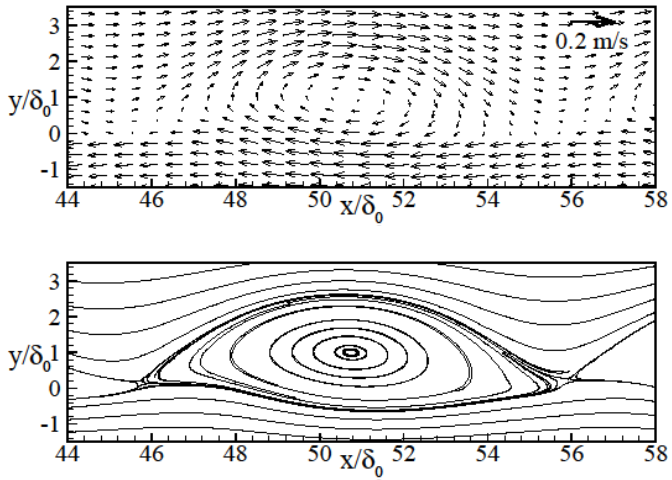
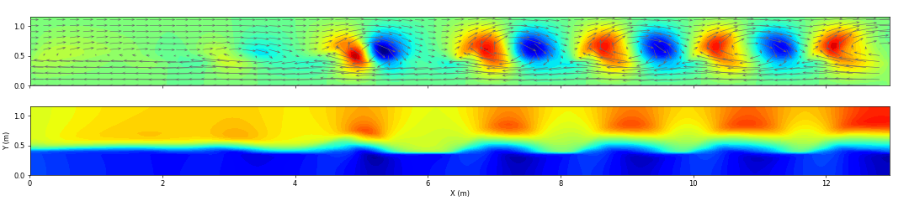

Shear Flow along Partially Vegetated Bank
REsearch Assistant
|
coastal engineering

This is one of Aaron's research topic at North Carolina State University funded by NSF. The main research objective is to develop a numerical model to simulate the laboratory shear flow in a partially vegetated channel conducted by Nepf's group at MIT. The model solves shallow water equations with Finite Volume Method, which is characterized by approximate HLLC Riemann solver and MUSCL-Hancock time integration. Compared with laboratory study by Nepf, the model well captured the development of shear flow in terms of the momentum thickness, dominant frequency, as well as the equilibrium momentum profile and vortex structure. Read more...
